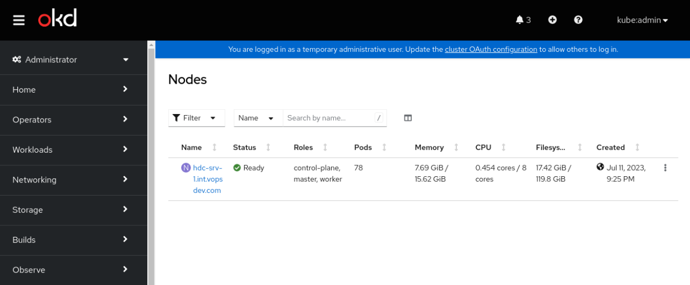

单节点 OKD4(SNO) - 手工方式
使用手工方式部署单节点 OKD (SNO) 4.12, 记录其中的坑和解决方法. 前文介绍的 assisted installer 方式比较简单, 但是需要用户的交互. 这里虽然是手工方式, 但是很容易转化为自动化流水线. 使用的 OKD 版本依然是 4.12.0-0.okd-2023-04-01-051724
直接使用 OCP 文档会遇到的问题
由于 rhcos 和 fedora coreos 的差异, 直接照搬 OCP 文档上创建内嵌 ignotion 文件的 ISO 来进行安装的方法会遇到各种各样的问题.
/var 空间不足
如果使用文档中的最小规格 8 vCPU/16G RAM/120G Disk, 初次启动就会遇到下面的错误
1 | journalctl -f -u bootkube.service |
查看空间使用量, 可以发现 loop0 设备只有 3.1G, 而 /var 目录挂载自 loop0 1
2
3
4
5
6
7
8
9
10
11
12df -h
Filesystem Size Used Avail Use% Mounted on
devtmpfs 4.0M 0 4.0M 0% /dev
tmpfs 7.9G 84K 7.9G 1% /dev/shm
tmpfs 3.2G 3.1G 88M 98% /run
/dev/sr0 746M 746M 0 100% /run/media/iso
/dev/loop1 625M 625M 0 100% /sysroot
/dev/loop0 3.1G 3.0G 129M 96% /run/ephemeral
tmpfs 7.9G 0 7.9G 0% /tmp
tmpfs 1.6G 0 1.6G 0% /run/user/1000
overlay 3.1G 3.0G 129M 96% /var/lib/containers/storage/overlay/e78d92d6f79340cbc2bc7c1bc580d0f0d0c6cbb0101458b6725c450958eeb2e1/merged
通过这个 fedora coreos issue 1344 可以知道当前版本的 fedora coreos 默认使用内存总量的 20% 用于 /run/ephemeral
试图修改 /sysroot 只读分区
fedora coreos 其实是一个泛用的操作系统, 实际 OKD 安装过程中会使用其对应版本的 fedora-coreos 镜像内容 "替换" 掉原来的系统. release-image-pivot 服务进行 rpm-ostree rebase 时会出现下面的错误
1 | journalctl -f -u release-image-pivot.service |
而 /sysroot 来自 live ISO 的挂载, 不允许写入
Journal 格式不匹配
在安装的最后阶段 machine config operator 会因为 journalctl 无法识别日志文件而失败. 具体看这个 OKD issue 1607
解决方法和步骤
主要从 assisted installer 的安装脚本中借用一部分, 追加到 ignition 文件中, 可以解决上面的问题
准备基础设施
本文将在 vSphere 8 环境安装 OKD 4.12 SNO.
准备好必要的 DNS 条目. 这里将使用静态 IP 地址, 无需 DHCP 1
2
3
4hdc-srv-1.int.vopsdev.com A 192.168.11.71
api.cls-sno-1.vopsdev.com CNAME hdc-srv-1.int.vopsdev.com
api-int.cls-sno-1.vopsdev.com CNAME hdc-srv-1.int.vopsdev.com
*.apps.cls-sno-1.vopsdev.com CNAME hdc-srv-1.int.vopsdev.com
准备二进制文件
提取 openshift-install 并下载对应版本的 fedora coreos ISO.
1 | RELEASE_PATH=openshift/okd:4.12.0-0.okd-2023-04-01-051724 |
同时准备后面会用到的 butane 和 coreos-install
生成初始的 ignition 文件
准备常规的 install-config.yaml 1
2
3
4
5
6
7
8
9
10
11
12
13
14
15
16
17
18
19
20
21
22
23
24
25
26
27apiVersion: v1
baseDomain: vopsdev.com
compute:
- name: worker
replicas: 0
controlPlane:
name: master
replicas: 1
metadata:
name: cls-sno-1
networking:
clusterNetwork:
- cidr: 10.128.0.0/14
hostPrefix: 23
machineNetwork:
- cidr: 192.168.11.0/24
networkType: OVNKubernetes
serviceNetwork:
- 172.30.0.0/16
platform:
none: {}
publish: External
bootstrapInPlace:
installationDisk: /dev/sda
additionalTrustBundle: XXX
pullSecret: XXX
sshKey: XXX1
2
3
4mkdir assets
cp install-config.yaml assets/
./openshift-install --dir=assets create single-node-ignition-config
cp assets/bootstrap-in-place-for-live-iso.ign sno.ign
定制 ignition 文件
通过定制 ignition 文件来实现:
- 添加 machine config 配置, 对 sno master 进行定制, 这里定制了
/etc/chrony.conf并创建了一个一次性的服务systemd-clear-journal.service来清理 journal 文件, 解决上面 journal 格式不匹配的问题 - 为 bootstrap 过程添加服务
okd-overlay.service及其对应的脚本/usr/local/bin/okd-binaries.sh解决上面剩余的两个问题
我们将使用 butane 工具来生成 machine config 的清单文件. 首先编写 butane 格式的 machine config 配置清单 98-machine-config-maser-sno.bu 1
2
3
4
5
6
7
8
9
10
11
12
13
14
15
16
17
18
19
20
21
22
23
24
25
26
27
28
29
30
31
32
33
34
35
36
37
38variant: openshift
version: 4.12.0
metadata:
labels:
machineconfiguration.openshift.io/role: master
name: 98-master-sno
storage:
files:
- path: /etc/chrony.conf
mode: 0644
overwrite: true
contents:
inline: |
server 1.ntp.svc.vopsdev.com iburst
server 2.ntp.svc.vopsdev.com iburst
driftfile /var/lib/chrony/drift
makestep 1.0 3
rtcsync
logdir /var/log/chrony
systemd:
units:
- contents: |
[Unit]
Description=Clear Journal to Remove Corrupt File
DefaultDependencies=no
After=kubelet.service
[Service]
Type=oneshot
RemainAfterExit=yes
ExecStart=bash -c "/usr/bin/journalctl --rotate && /usr/bin/journalctl --vacuum-time=1s"
TimeoutSec=0
[Install]
WantedBy=multi-user.target
enabled: true
name: systemd-clear-journal.servicebutane 生成 machine config 的 yaml 清单 1
butane 98-machine-config-maser-sno.bu -o 98-machine-config-maser-sno.yaml
okd-binaries.sh 脚本的内容如下: 1
2
3
4
5
6
7
8
9
10
11
12
13
14
15
16
17
18
19
20
21
22
23
24
25
26
27
28
29
30
31
32
set -eux
# Fetch an image with OKD rpms
RPMS_IMAGE="quay.io/openshift/okd-content@sha256:10c02c766abb34085023df151e7855a848fa5e212e21a4e8163e7aae3d1e9651"
while ! podman pull --quiet "${RPMS_IMAGE}"
do
echo "Pull failed. Retrying ${RPMS_IMAGE}..."
sleep 5
done
mnt=$(podman image mount "${RPMS_IMAGE}")
# Install RPMs in overlayed FS
mkdir /tmp/rpms
cp -rvf ${mnt}/rpms/* /tmp/rpms
# If RPMs image contants manifests these need to be copied as well
mkdir -p /opt/openshift/openshift
cp -rvf ${mnt}/manifests/* /opt/openshift/openshift || true
tmpd=$(mktemp -d)
mkdir ${tmpd}/{upper,work}
mount -t overlay -o lowerdir=/usr,upperdir=${tmpd}/upper,workdir=${tmpd}/work overlay /usr
rpm -Uvh /tmp/rpms/*
podman rmi -f "${RPMS_IMAGE}"
# Symlink kubelet pull secret
mkdir -p /var/lib/kubelet
ln -s /root/.docker/config.json /var/lib/kubelet/config.json
# Expand /var to 6G if necessary
if (( $(stat -c%s /run/ephemeral.xfsloop) > 6*1024*1024*1024 )); then
exit 0
fi
/bin/truncate -s 6G /run/ephemeral.xfsloop
losetup -c /dev/loop0
xfs_growfs /var
mount -o remount,size=6G /run
这个脚本来自 assisted installer 的 bootstrap 过程. 其中 RPMS_IMAGE 变量的 sha256 值对应 okd-rpms 镜像, 可以通过下面命令得到 1
oc adm release info quay.io/$RELEASE_PATH | grep okd-rpms
用于生成整合 ignition 的 butane 格式清单文件 customize-embedded.bu 1
2
3
4
5
6
7
8
9
10
11
12
13
14
15
16
17
18
19
20
21
22
23
24
25
26
27
28
29
30
31
32
33variant: fcos
version: 1.4.0
ignition:
config:
merge:
- local: sno.ign
storage:
files:
- path: /opt/openshift/openshift/98_openshift-machineconfig_98-master-config-sno.yaml
mode: 0644
overwrite: true
contents:
local: 98-machine-config-maser-sno.yaml
- path: /usr/local/bin/okd-binaries.sh
mode: 0755
overwrite: true
contents:
local: okd-binaries.sh
systemd:
units:
- contents: |
[Service]
Type=oneshot
ExecStart=/usr/local/bin/okd-binaries.sh
[Unit]
Wants=network-online.target
After=network-online.target
[Install]
WantedBy=multi-user.target
enabled: true
name: okd-overlay.service
使用下面的命令生成整合的 ignition 文件 1
butane -d . customize-embedded.bu -o boot.ign
生成定制镜像
使用 coreos-installer 命令将 ignition 文件内嵌入 ISO, 同时通过内核参数设置 bootstrap 过程的静态网络配置. 这个网络配置会被复制到最终的 machine config 中 1
2
3
4
5
6
7
8IP=192.168.11.71
GATEWAY=192.168.11.254
NETMASK=255.255.255.0
HOSTNAME=hdc-srv-1.int.vopsdev.com
DNS=192.168.11.10
./coreos-installer iso kargs modify -a "rd.neednet=1 ip=${IP}::${GATEWAY}:${NETMASK}:${HOSTNAME}::none nameserver=${DNS}" fedora-coreos-live.iso
./coreos-installer iso ignition embed -fi boot.ign fedora-coreos-live.iso
完成安装
将 ISO 挂载到虚拟机并启动, 登入后可以观察其 bootstrap 的过程 1
journalctl -f -u okd-overlay.service -u release-image.service -u bootkube.service -u release-image-pivot.service -u install-to-disk.service
中间会经过几次重启, 整个过程大约半小时, 最终可以成功安装 1
2
3
4
5
6
7
8
9
10
11
12
13
14
15
16./openshift-install --dir=assets wait-for bootstrap-complete
INFO Waiting up to 20m0s (until 10:46PM) for the Kubernetes API at https://api.cls-sno-1.vopsdev.com:6443...
INFO API v1.25.0-2786+eab9cc98fe4c00-dirty up
INFO Waiting up to 30m0s (until 10:56PM) for bootstrapping to complete...
INFO It is now safe to remove the bootstrap resources
INFO Time elapsed: 0s
./openshift-install --dir=assets wait-for install-complete
INFO Waiting up to 40m0s (until 11:06PM) for the cluster at https://api.cls-sno-1.vopsdev.com:6443 to initialize...
INFO Checking to see if there is a route at openshift-console/console...
INFO Install complete!
INFO To access the cluster as the system:admin user when using 'oc', run 'export KUBECONFIG=/home/admin/workspace/okd-sn-4.12/assets/auth/kubeconfig'
INFO Access the OpenShift web-console here: https://console-openshift-console.apps.cls-sno-1.vopsdev.com
INFO Login to the console with user: "kubeadmin", and password: "xxxxx-xxxxx-xxxxx-xxxxx"
INFO Time elapsed: 0s
